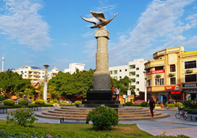
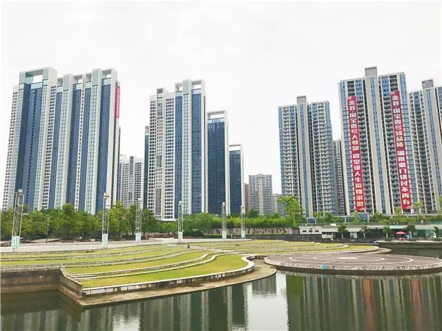
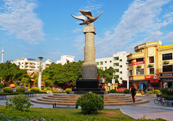
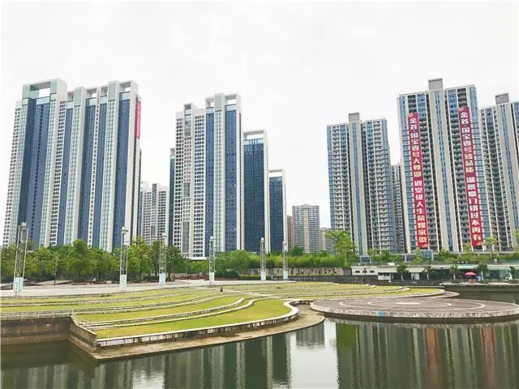
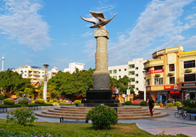
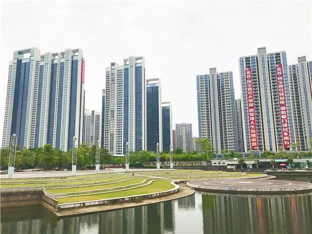

首页
走进东侨
政务公开
网上办事
美丽东侨
东侨招商
当前位置：
首页
> 政务公开
进入>
政府信息公开指南
政府信息公开目录
政府信息公开制度规定
依申请公开
政府信息公开年度报告
政府信息公开意见箱
东侨要闻
部门动态
乡镇动态
图片
|
视频
 
东侨映象
我县价格认定工作成效显著
10-29
我县通过国家水土保持生态文明工程评审验收
10-23
我县质量计量检测所被授予省级“阳光价费公示示范
10-13
县委十二届六次全体会议召开
09-30
市委编办检查组到我县开展机构和人员编制核查检查
09-19
我县2个万亩早稻高产创建项目通过现场验收
09-19
我县召开2015年度城镇居民基本医疗保险工作会议
09-19
更多>>
建言献策
更多>>
县长：
蔡萌芽
副县长：
郑文良
余金南
王超万
颜一鹏
陈坚宏
陈伯熙
黄宝玲
赵存明
正处级干部：
梁文光
政府文件
政府会议
政策解读
东侨县人民政府关于成立东侨县农村土地承包经营权
东侨县人民政府关于东侨县2014年度第3批次农用地
东侨县人民政府关于增补县级治安保卫重点单位的通
东侨县人民政府关于做好2014年普通高等学校毕业生
东侨县人民政府关于郭生地等同志职务任免的通知
更多>>
我县召开2015年度城镇居民基本医疗保险工作会议
赵存明对全县科技业务工作提出三点要求
县政府第35次常务会和第26次县长办公会召开
努力做好关心下一代工作
蔡萌芽就财税推进工作提三点要求
更多>>
《东侨县关于推进电子商务发展的十条措施》政策十
《东侨县关于推进电子商务发展的十条措施》政策九
《东侨县关于推进电子商务发展的十条措施》政策八
《东侨县关于推进电子商务发展的十条措施》政策七
《东侨县关于推进电子商务发展的十条措施》政策六
更多>>
规划计划
财政资金
环境保护
东侨县工业园区2014年1-6月经济运行情况及下半年
东侨县工业园区6月份工作小结及7月份工作计划
县人力资源和社会保障局1-5月份工作小结
东侨县人民政府关于印发东侨县2014年度国有建设用
东侨县人力资源和社会保障局2014年工作思路
更多>>
2013年东侨县教育部门决算说明
2014年东侨县教育部门预算说明
2014年东侨县计划生育服务站预算说明
2013年东侨县计划生育服务站决算说明
2014年东侨县公安局部门预算说明
更多>>
东侨县环保局成立县环境应急与事故调查中心
东侨县环保局稳步推进东侨环境应急物资储备工作
东侨县召开东侨县突发环境事件应急预案、东侨县污
东侨县环保局积极参加多部门道路交通事故应急演练
东侨县环保局地震引发突发环境事件应急预案
更多>>
通知公告
更多>>
东侨县公安局交警大队车辆管理所
福建省东侨县纸坑矿区水泥用石灰
关于2014年福建省泉州市东侨县卫
县委十二届六次全体会议召开
东侨县环保局二〇一四年十一月份
东侨县环保局二〇一四年十一月
东侨县五里街鸿华五金配件维修服
安全生产
征地拆迁
公共资源
省政府安办到我县开展安全生产重点工作督查
东侨县举行天然气管道泄漏着火事故综合应急演练活
市安委会到我县开展安全生产工作督查
我县开展危险化学品运输车辆执法检查
东侨县工业区2014年上半年安全生产自查自纠情况汇
东侨县工业区2014年上半年安全生产自查自纠情况汇
更多>>
东侨县人民政府关于东侨县2014年度第3批次农用地
东侨县人民政府办公室关于印发山美水库生态环境保
东侨县人民政府办公室关于印发国省干线纵四线东侨
东侨县人民政府关于东侨县2014年度第1批次农用地
东侨县人民政府关于东侨县气象局农业气象观测场建
东侨县人民政府关于东侨县气象局农业气象观测场建
更多>>
东侨县国土资源局关于国有建设用地使用权挂牌出让
东侨县国土资源局关于国有建设用地使用权挂牌出让
东侨县国土资源局关于国有建设用地使用权挂牌出
东侨县国土资源局国有建设用地使用权出让公告 永
东侨县国土资源局关于国有建设用地使用权挂牌出让
东侨县国土资源局关于国有建设用地使用权挂牌出让
更多>>
重点项目
应急管理
三农信息
东侨县人民政府办公室关于下达东侨县2013年承担泉
关于印发《东侨县文体新系统地震应急预案东侨县人
东侨县人民政府办公室转发《泉州市人民政府办公室
东侨县人民政府办公室关于2008年县政府重点工作目
东侨县人民政府办公室关于2007年县政府重点工作目
东侨县人民政府办公室关于2007年县政府重点工作目
更多>>
东侨县人民政府关于印发东侨县地震应急预案的通知
关于印发《东侨县文体新系统地震应急预案》的通知
关于印发《东侨县发展和改革局地震应急预案》的通
东侨县农业局关于印发《东侨县农产品质量安全突发
东侨县人民政府办公室关于开展新一轮地震应急预案
东侨县人民政府办公室关于开展新一轮地震应急预案
更多>>
抓好龙眼爻纹细蛾的监测与防治工作
抓好芦柑蚧壳虫等虫害防治
马蓝栽培技术
东侨县人民政府办公室关于下达2014年农资综合补贴
木本金银花栽培技术简介
木本金银花栽培技术简介
更多>>
专题专栏
更多>>
东侨“美丽乡村”建设专栏
打好“五大战役”推动东侨跨越发
健康教育
山美水库生态环境保护/a>
桃源乡讯
政府信息公开专栏
城乡建设
城市要闻
美丽城市
东侨县人民政府办公室关于印发数字东侨地理空间框
县住建局加快2014年保障性安居工程任务建设
关于印发《东侨县2014年宜居环境建设行动计划项目
县住建局“三小微”精细管理城市
我县积极推进城乡石结构房屋改造工作
市委编办检查组到我县开展机构和人员编制核查检查
更多>>
人事信息
统计信息
社区动态
关于批准确认柯超斌等3位同志水利专业初级职务任
关于批准确认教育系统潘应培等23位同志中小学、幼
关于公布康志扬同志高级会计师职务任职资格的通知
关于批准确认王巧丽等5位同志水利、环保等专业初
东侨县人民政府关于郭生地等同志职务任免的通知
更多>>
东侨2014年1-10月份社会消费品零售总额情况
东侨县2014年1-10月份规模以上工业生产情况
东侨县1-10月主要经济指标运行情况
东侨县2014年10月份居民消费价格变动情况
东侨县2014年10月月度数据
东侨县2015年11月月度数据
更多>>


 


